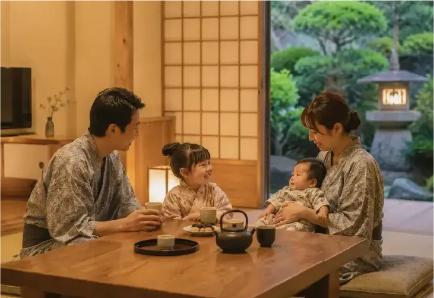
家族で過ごす贅沢な時間
扉を開ければ、そこは銅山温泉の静けさに包まれた、日常から優しく切り離された特別な世界。
わずか13室だからこそ叶う、周囲を気にせずゆったりと過ごせる静かなひととき。
やわらかな竹灯籠の灯りが彩る温泉旅館で
お子様御膳やベビー・キッズ向け貸出品もご用意しております。
伝統が息づく上質な佇まいの中で、小さなお子様との大切な時間を、どこよりも愛おしく、
そして安心して紡いでいただけます。
扉を開ければ、日常から優しく切り離された静かな世界。
わずか13室だからこそ叶う、ゆったりとしたひととき。
名湯と旬の食、温かなもてなしに包まれながら、
ご家族との大切な時間を安心してお過ごしいただけます。
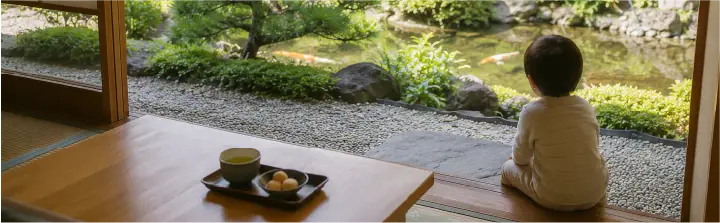
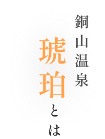
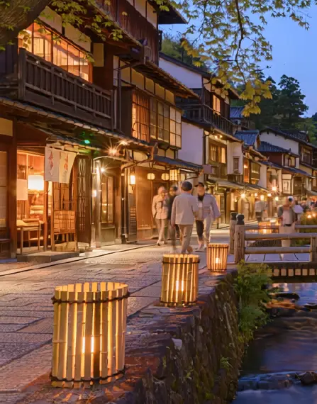
名湯に癒やされ、厳選された旬の食を囲む。
「琥珀」という名にふさわしい、温かく気品あふれるおもてなしで、皆様をお迎えいたします。
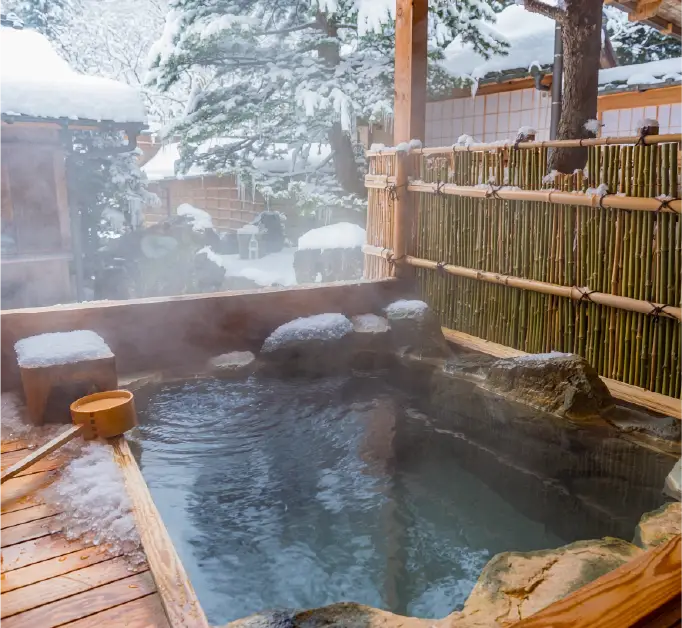
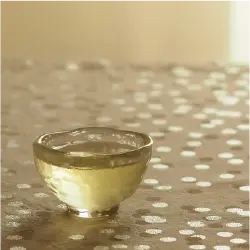
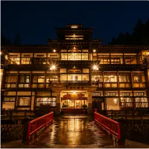
琥珀の特徴
お知らせ
ぷくぷくと湧き出す
源泉湧き流しの湯。
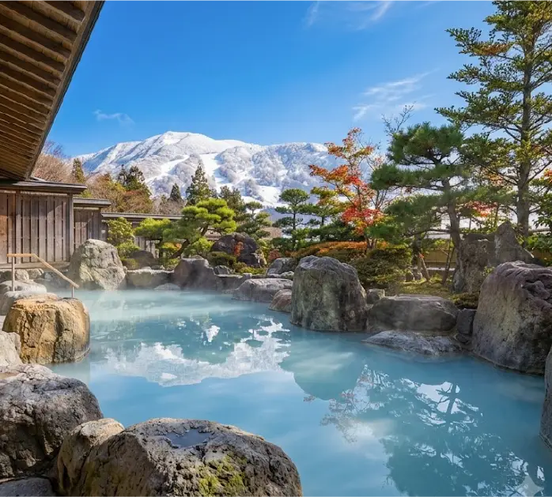
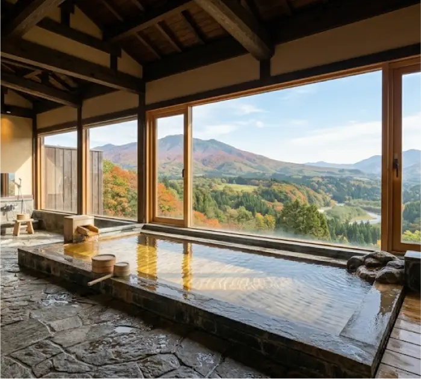
四季折々の自然を望む露天風呂で、日々の疲れをゆっくりと癒やすひととき。 やわらかな湯と静かな空間が、ご夫婦はもちろん、お子様との大切な時間も優しく包み込みます。
詳細を見る五感で味わえる
山方の味覚。
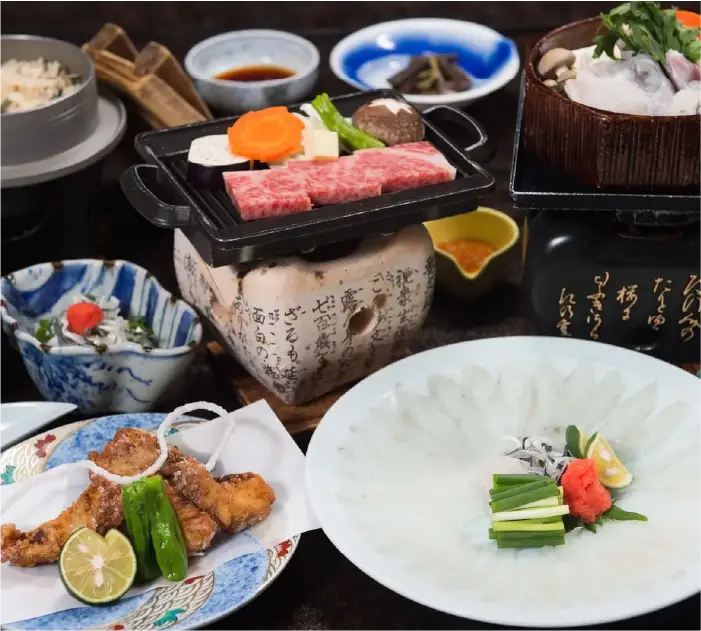
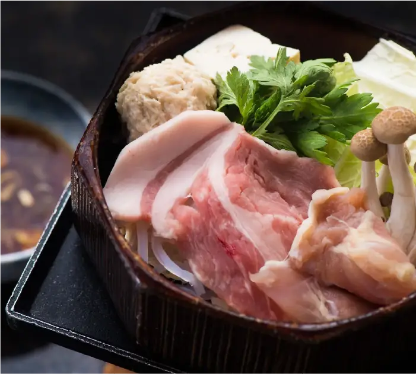
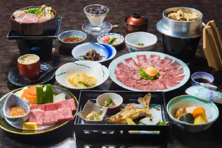
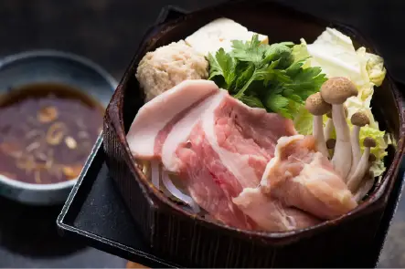
地元山方県産の旬の食材を仕入れ、どこか懐かしい素朴な味わいと、 季節の調理にこだわった品々をぜひご堪能ください。
詳細を見る四季の美しさを感じながら心ほどけるひとときを。
和の趣を大切にした客室は、それぞれ異なる魅力を備えています。窓の外に広がる自然や 静かな空間が、日常を忘れる癒やしの時間を演出します。旅の目的に合わせて、お好みのお部屋をお選びください。 和の趣を大切にした客室で、自然を眺めながら心ほどけるひとときを。 旅の目的に合わせて、お好みのお部屋をお選びください。
詳細を見る移ろう季節を
お子様と愛でる
やさしいおもてなし。
大切なお子様とのご旅行が、笑顔あふれる素敵な思い出になりますように。
館内にはゆっくり過ごせるキッズスペースをご用意しています。
絵本やおもちゃも揃えておりますので、どうぞ親子で楽しい時間をお過ごしください。
また、数に限りはございますが、お子様用の便利な貸出備品も取り揃えております。
ご希望のお客様は、どうぞ気兼ねなくスタッフまでお申し付けください。
▼貸出備品
ベビーカー、ベビー布団、ベビー毛布、キッズアメニティ、お子様用館内着
館内には、親子でゆっくり過ごせるキッズスペースをご用意しています。
お子様用の貸出備品もございますので、必要な際は気兼ねなくお声がけください。
▼貸出備品
ベビーカー、ベビー布団、キッズアメニティ、お子様用館内着
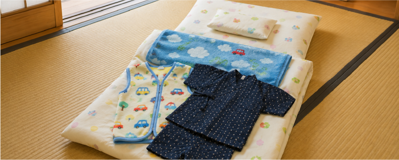
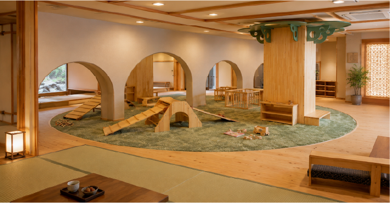
竹灯籠
銀山川沿いに並ぶ竹灯籠が、町並みと水辺をやさしく照らす夜。 昼間とは異なる静けさのなか、涼やかな川の流れと夜風に包まれて、温泉街はどこか幻想的な表情を見せます。 旅館で湯を楽しんだあとは、灯りをたどる散策へ。 季節ごとに変わる景色と光の印象が、旅の余韻をより深く心に残してくれます。
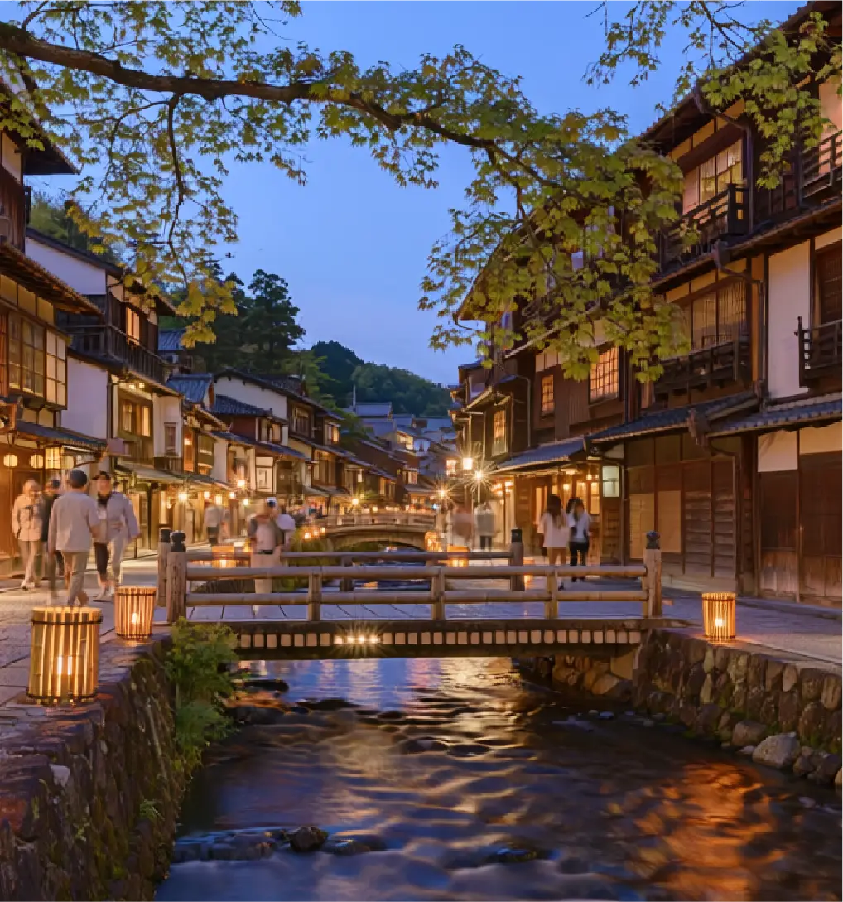
四季と温泉が
織りなす
特別な時間。
<自家用車でお越しの方>
銅山温泉街は景観保護のため、宿周辺への車の乗り入れを制限しています。 お車でお越しの際は、大正マロン館駐車場をご利用ください。 駐車場からは路線バスをご利用のうえ、銅山温泉街から徒歩にて当館までお越しいただけます。 ご宿泊のお客様には、チェックイン時に無料チケットをお渡しします。
<飛行機でお越しの方>
約1時間（予約制） 銅山温泉街 徒歩（10分） 旅館「琥珀」
山方空港から専用のシャトルバス「冬霞（ふゆがすみ）号」を運行しています。 前日までのご予約制です。ご宿泊予定のお客様は、お電話にてご予約をお願いいたします。
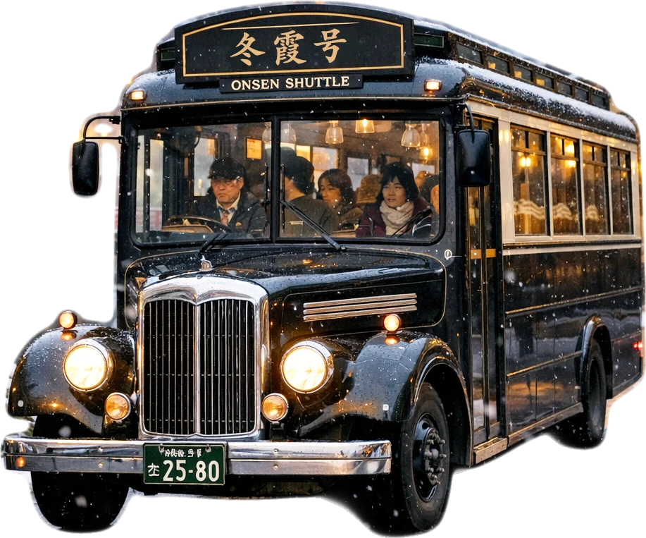
お問い合わせ
ご質問・ご予約・ご要望など、お気軽にお問い合わせください。